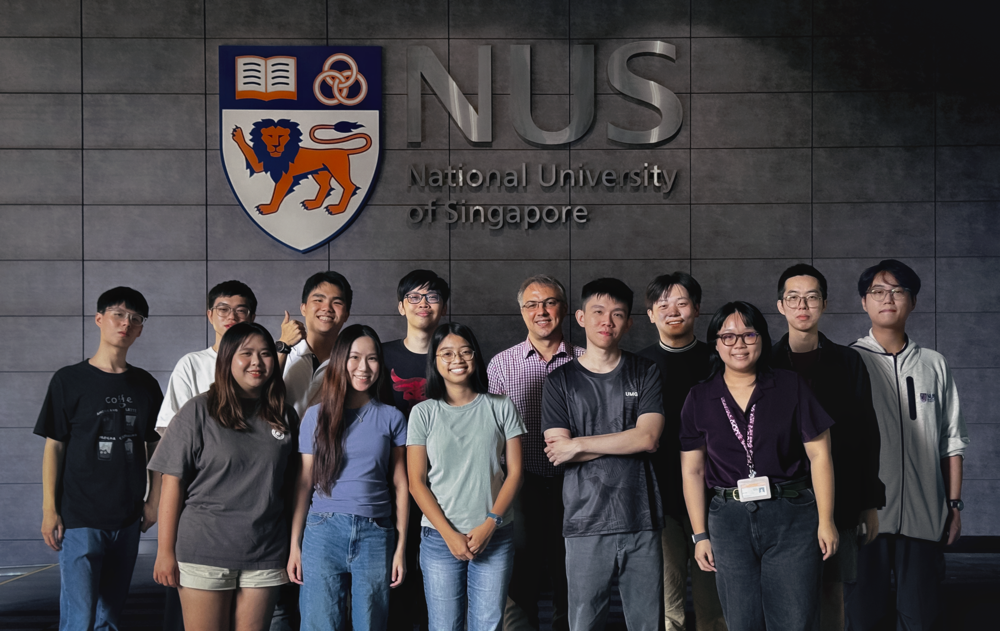

{% assign active = site.data.people | where: "status", "active" %}
{% assign visiting = site.data.people | where: "status", "visiting" %}
{% assign past = site.data.people | where: "status", "past" %}

<div class="group-photo-container">
  
</div>

{% include people-group.html heading="Active members" list=active %}
{% include people-group.html heading="Visiting members" list=visiting %}
{% include people-group.html heading="Past members" list=past %}
